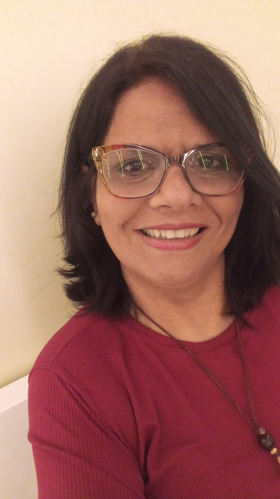
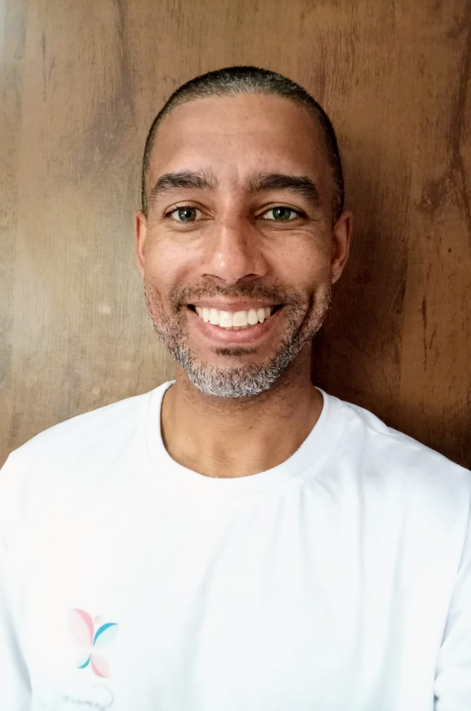
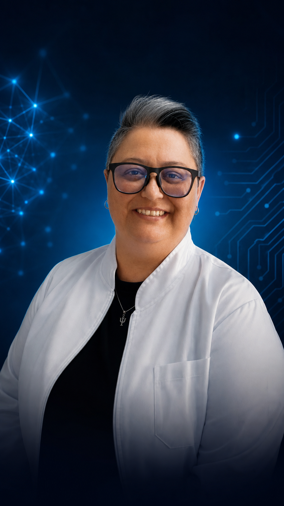
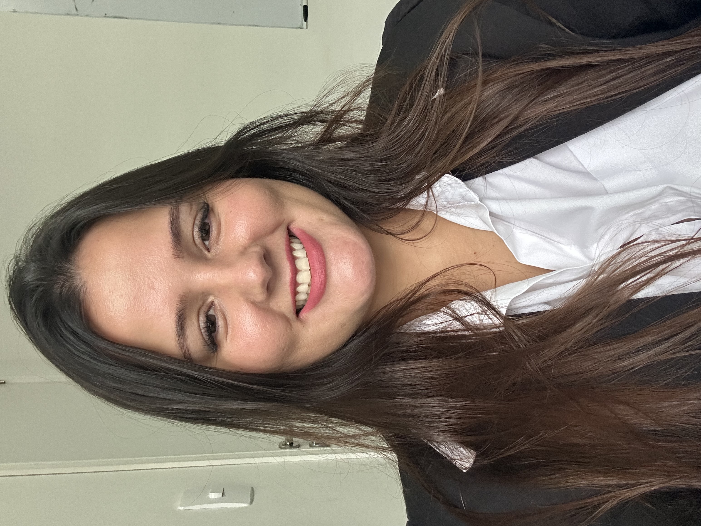

Desenvolvimento e reabilitação de crianças, adolescentes e adultos no ABC Paulista
Fale conosco no WhatsAppA Semear nasceu em Diadema em 2023, com dois sonhos e muita determinação. Hoje somos referência em desenvolvimento e reabilitação de crianças, adolescentes e adultos no ABC Paulista.
Contamos com uma estrutura fisicamente acessível e uma equipe preparada para atender crianças, adolescentes e adultos. Para que cada paciente seja direcionado ao atendimento mais adequado às suas necessidades, nossa atuação não contempla casos de lesão medular ou disfagia.

Terapeuta Ocupacional | Sócia-Proprietária
Terapeuta Ocupacional e sócia-proprietária, com 16 anos de experiência na área da saúde. Possui formação especializada em Neurologia, Saúde Mental e Psicopedagogia, além de certificação em Integração Sensorial de Ayres. Sua atuação é pautada em uma abordagem individualizada, considerando as necessidades, potencialidades e particularidades de cada paciente, com foco na promoção da autonomia, funcionalidade e qualidade de vida. Sua trajetória alia experiência clínica, formação especializada e gestão, contribuindo também para a construção de um atendimento multidisciplinar e humanizado.
Fonoaudióloga | Sócia Proprietária
Fonoaudióloga e sócia-proprietária, com formação especializada em Motricidade Orofacial, Fonoaudiologia Hospitalar e Fonoaudiologia Neurofuncional. Sua atuação integra diferentes áreas da Fonoaudiologia, considerando as necessidades individuais de cada paciente e buscando favorecer comunicação, funções orofaciais, funcionalidade e qualidade de vida. Sua trajetória e formação especializada contribuem para uma atuação técnica, individualizada e integrada, fortalecendo o cuidado multidisciplinar oferecido pela clínica.
Assistente Administrativa | Atendimento e Gestão Clínica
Profissional com experiência em atendimento ao público, rotinas administrativas e faturamento. Iniciou sua trajetória na clínica como recepcionista, atuando inicialmente na cobertura de licença-maternidade, e posteriormente foi efetivada para a área administrativa, destacando-se pela experiência, comprometimento e conhecimento da rotina clínica. Possui também experiência na administração de pequenas empresas, contribuindo para uma atuação organizada, responsável e acolhedora, tanto no relacionamento com pacientes quanto no suporte às demandas administrativas da clínica.
Recepcionista
Profissional dedicada ao atendimento e acolhimento dos pacientes, com 2 anos de experiência na clínica. Esta é sua primeira experiência profissional como recepcionista, trajetória que vem sendo construída com comprometimento, dedicação e carinho no relacionamento com pacientes, familiares e equipe. Atua como parte importante da experiência de acolhimento da clínica, contribuindo para que cada pessoa seja recebida com atenção, respeito e cordialidade desde o primeiro contato.

Psicomotricista | Educador Físico
Atua na área da psicomotricidade com crianças, adultos e idosos, utilizando o movimento e a atividade corporal como recursos para favorecer funcionalidade, autonomia, coordenação, equilíbrio e qualidade de vida. Possui ampla experiência com o público infantil, incluindo crianças atípicas e pessoas com TEA, além de experiência com idosos e indivíduos em processo de recuperação funcional. Sua trajetória profissional inclui atuação em Educação Física escolar, natação para bebês e crianças, atividades com crianças atípicas, recreação infantil e iniciação esportiva.
Psicólogo
Psicólogo clínico com atuação junto a crianças, adolescentes e adultos. Possui 4 anos de experiência com o público infantil e 2 anos de experiência como aplicador ABA, aliando essa vivência à atuação clínica fundamentada na Terapia Cognitivo-Comportamental (TCC). Seu trabalho é pautado no acolhimento, na construção de estratégias terapêuticas individualizadas e no respeito à singularidade de cada paciente, considerando suas necessidades, potencialidades e contexto de vida.
Psicolopedagoga
Pedagoga com experiência na área da Educação Infantil e atuação em contextos voltados ao desenvolvimento e à aprendizagem. Trabalhou durante 3 anos e 6 meses como professora em CEI, adquirindo ampla vivência com o público infantil e suas diferentes necessidades de desenvolvimento. Atualmente atua como psicopedagoga na Semear, contribuindo para a identificação e compreensão das particularidades relacionadas aos processos de aprendizagem e desenvolvimento, com uma abordagem acolhedora e individualizada.
Psicologa Clinica | Pós-Graduanda em Neuropsicologia
Psicóloga clínica, pós-graduanda em Neuropsicologia, com atuação fundamentada na Terapia do Esquema. Desenvolve um trabalho voltado à compreensão das necessidades emocionais, dos padrões de comportamento e dos processos cognitivos de cada paciente, buscando favorecer regulação emocional, autoconhecimento e desenvolvimento de estratégias mais adaptativas. Possui formação complementar em ABA, Modelo Denver de Intervenção Precoce (ESDM), VB-MAPP, PEI e Psicologia da Aprendizagem, ampliando sua atuação junto a crianças e pessoas neurodivergentes e fortalecendo o trabalho integrado entre clínica, desenvolvimento e contexto escolar.

Neuropsicóloga | Psicóloga Especialista em Psicologia Clínica
Pós-graduada em Neuropsicologia, Avaliação Psicológica e Psicodiagnóstico, Psicologia Forense e Jurídica e Criminal Profiling Psicóloga clínica e neuropsicóloga, com atuação voltada à compreensão integral dos aspectos cognitivos, emocionais e comportamentais de crianças, adolescentes e adultos. Especialista em Psicologia Clínica, possui formação avançada em Neuropsicologia, Avaliação Psicológica e Psicodiagnóstico. Atua em psicoterapia e avaliação neuropsicológica, realizando investigação clínica, aplicação e integração de instrumentos, elaboração de laudos, devolutivas humanizadas e encaminhamentos multiprofissionais. Seu trabalho alia escuta acolhedora, rigor técnico e linguagem acessível, considerando a singularidade, a história e o contexto de cada paciente. Também possui experiência em gestão de serviços de Psicologia, saúde mental nas organizações e docência no Ensino Superior.

Neuropsicopedagogia Clínica
Pedagoga e neuropsicopedagoga, com formação especializada em Transtorno do Espectro Autista (TEA) e Neuropsicopedagogia Clínica. Atualmente, amplia sua formação por meio de pós-graduação em Educação Especial. Possui mais de 26 cursos de formação complementar nas áreas de TEA, dificuldades de aprendizagem, TDAH e deficiência intelectual, reunindo uma formação continuamente atualizada para compreender as particularidades do desenvolvimento e dos processos de aprendizagem de cada paciente. Sua atuação busca integrar conhecimentos da educação e da neuropsicopedagogia para favorecer o desenvolvimento, a aprendizagem e a autonomia, respeitando o ritmo, as necessidades e as potencialidades de cada indivíduo.
Fisioterapeuta
Fisioterapeuta com 7 anos de experiência profissional e pós-graduação em Fisioterapia Neurofuncional. Ao longo de sua trajetória, adquiriu experiência em diferentes áreas da Fisioterapia, incluindo Ortopedia e Gerontologia. Há 5 anos atua com Fisioterapia no contexto ABA, direcionando sua prática para as necessidades individuais de cada paciente e contribuindo para o desenvolvimento de habilidades motoras, funcionalidade, autonomia e qualidade de vida.
Lugar excelente e com profissionais de extrema qualidade… Com um atendimento da melhor qualidade da hora que chegamos até a hora de ir embora!❤️ Essa equipe é nota 1000Ver avaliação no Google